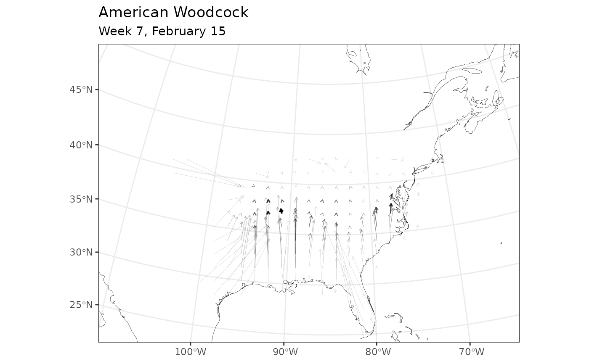

This plots the mean movement out of every cell in a BirdFlow model for a given starting time, based on the transition probabilities for the following transition. Each arrow starts in a cell center and ends at the average location projected for Birds from that cell. The line width and alpha (transparency) are set such that arrows have more visual weight if there is a higher probability of a bird being at the starting location and time.
Arguments
- bf
a BirdFlow object
- start
The starting timestep for the transition to be modeled
- direction
"Forward" by default. Set to "backward" to calculate vectors for a transition backwards in time.
- mv
This is optional and primarily for internal use by
animate_movement_vectors()it allows explicitly providing movement vectors as a data frame, in which casestartanddirectionare ignored.
Value
an object that inherits classes gg and ggplot it can be plotted
with print().
Details
Importantly, this is a visual representation of the transitions encoded in the model, not of the average movement of a bird through a given cell at a given point in time, which would involve both the birds starting at that cell and birds passing through it from other starting locations.
See also
calc_movement_vectors()for the vector calculations.animate_movement_vectors()to produce animations of the vectors over time.
Examples
bf <- BirdFlowModels::amewoo
plot_movement_vectors(bf, start = 7)
